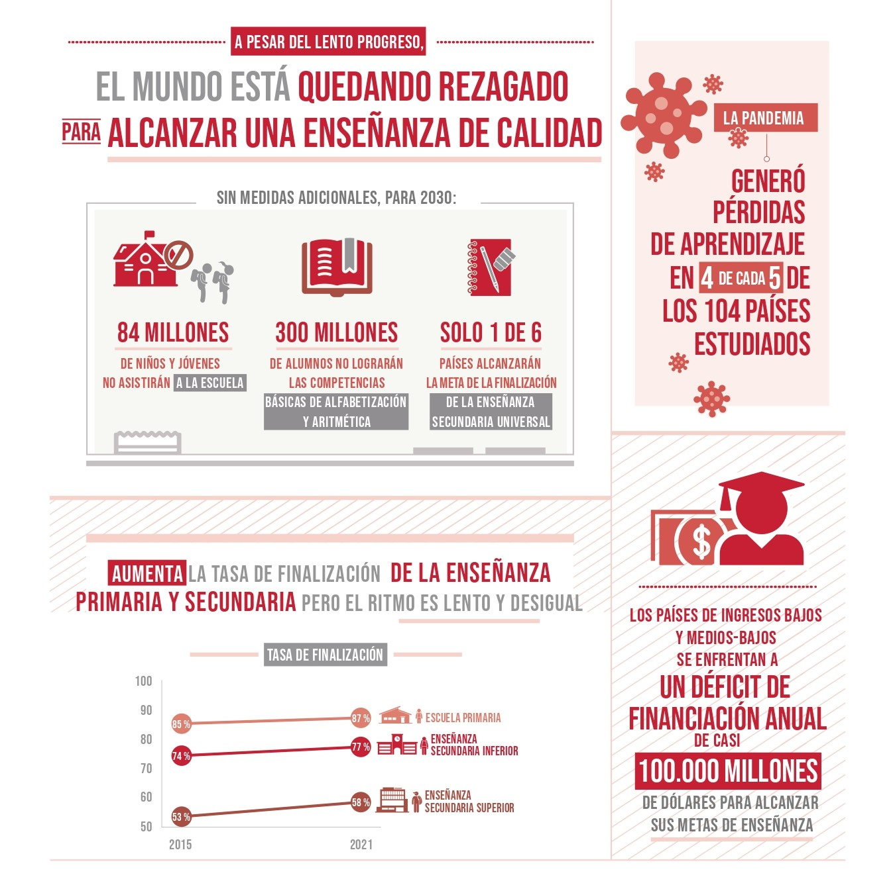

Objetivos de Desarrollo Sostenible
ODS 4: Educación de Calidad
Garantizar una educación inclusiva, equitativa y de calidad, y promover oportunidades de aprendizaje durante toda la vida para todos.
Objetivos Clave
- Asegurar que todos los jóvenes y una proporción sustancial de adultos, tanto hombres como mujeres, logren la alfabetización y el cálculo numérico.
- Asegurar que todos los jóvenes y adultos tengan acceso equitativo a una formación técnica y profesional de calidad.
- Aumentar el número de jóvenes y adultos que tienen habilidades relevantes, incluidas habilidades técnicas y vocacionales, para el empleo, el trabajo decente y el emprendimiento.
- Promover la educación inclusiva y equitativa de calidad para todos.
Importancia de la Educación de Calidad
La educación de calidad no solo permite a los individuos mejorar sus oportunidades laborales, sino que también fomenta sociedades más equitativas y sostenibles. La educación es la base del desarrollo y del progreso, y es fundamental para lograr los demás ODS.
